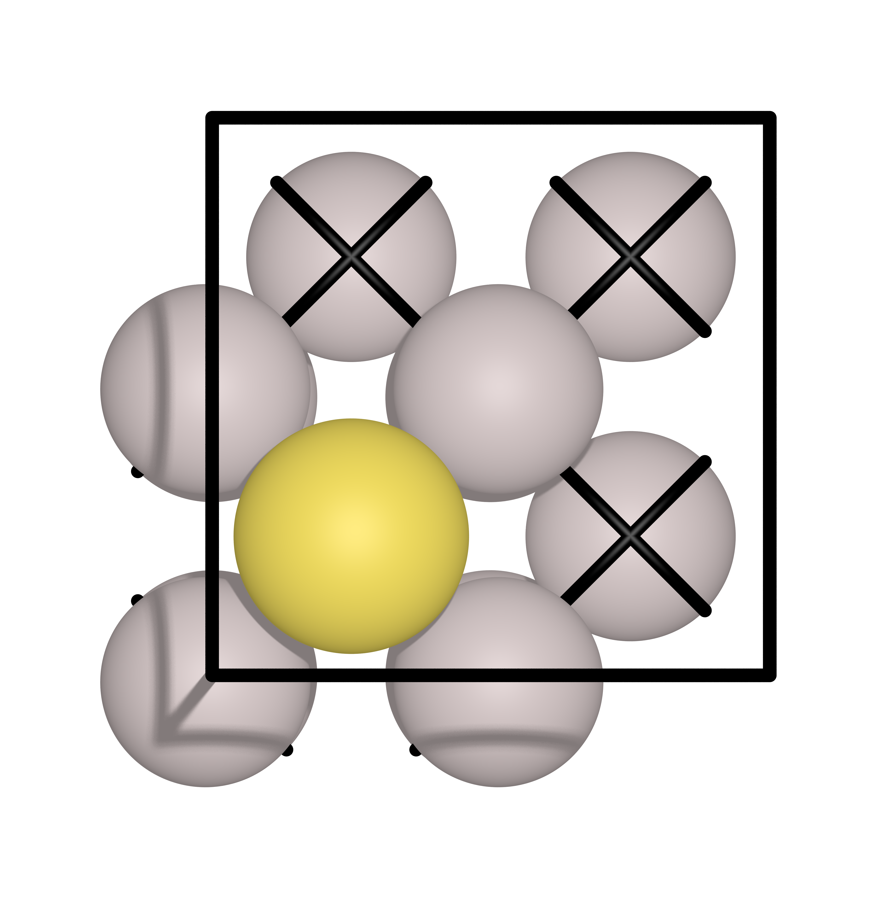
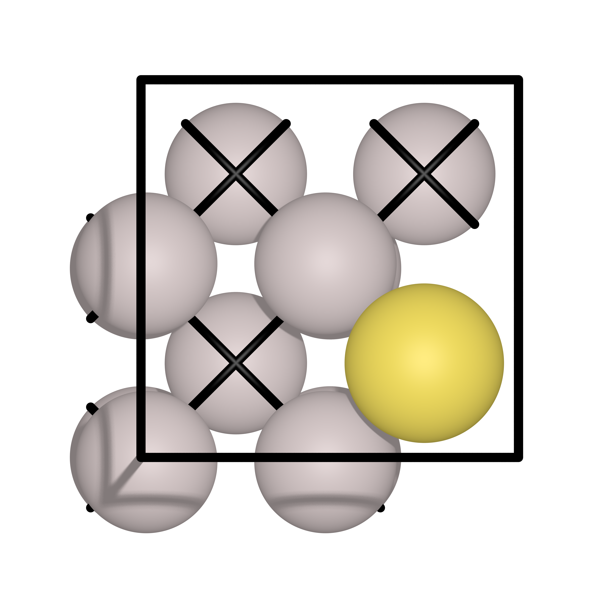

Nudge elastic band (NEB) method#
In this section, we will introduce the NEB method. Specifically, we will talk about:
Path Interpolation
NEB via Quantum Espresso
NEB via ASE
Machine learning (ML) NEB via Catlearn
Pathway Interpolation#
Before starting with the NEB calculations, we need to prepare the most important input file for NEB, which is the initial pathway.
The initial pathway is very important in NEB. A good pathway will give you a good initial guess of the minimum energy pathway (MEP). A bad pathway will give you a bad initial guess of the MEP. In the latter case, the NEB method will not converge to the MEP. A good pathway can also reduce the number of iterations needed to converge to the MEP leading to a faster calculation.
There are two ways to generate a pathway:
Manual (do it yourself)
Automatic via Linear Interpolation - This is the most common way to generate a pathway
Automatic via
idpp- Somehow a better pathway generator compared to linear interpolation. More details about it here:
Interpolator#
For the purpose of this tutorial, we have a script that can generate a pathway for you. This script is called image_generator.py
To use this script, you need to have the following:
Initial image (ASE readable file)
Final image (ASE readable file)
Total number of images (integer)
Just run it like this:
python3 image_generator.py -i initial_image.xyz -f final_image.xyz -ni 5 -m idpp
# iddpp can be replaced by linear
Output files#
This will generate two files:
pathway.trajThis is a trajectory file that contains the initial, intermediate, and final images (total of 5 images (with 3 intermediate images)).
Useful for doing the NEB with ASE or Catlearn
pathway.espresso-nebThis is a pathway file that can be copy-pasted to the Quantum Espresso input file for
neb.x
NEB via Quantum Espresso#
Quantum Espresso already has a NEB implementation called neb.x. You can simply build it using the same procedure as building the pw.x.
Example: Au diffusion#
In this example, a Au atoms will diffuse from one hollow site to another hollow site on an Al(111) surface. The initial and final images are shown below:
 {kind=link}
{kind=link}
Input file#
An example input file for neb.x is shown below:
BEGIN
BEGIN_PATH_INPUT
&PATH
restart_mode = "restart"
string_method = "neb"
opt_scheme = "broyden"
CI_scheme = "auto"
nstep_path = 1000
path_thr = 0.05
ds = 2.0
k_max = 0.3
k_min = 0.2
num_of_images = 7
/
END_PATH_INPUT
BEGIN_ENGINE_INPUT
&CONTROL
/
&SYSTEM
ecutwfc = 50
ecutrho = 400
occupations = 'smearing'
degauss = 0.01
smearing = 'gaussian'
ntyp = 2
nat = 13
ibrav = 0
/
&ELECTRONS
electron_maxstep = 100
conv_thr = 1e-06
mixing_mode = 'plain'
mixing_beta = 0.5
diagonalization = 'david'
/
ATOMIC_SPECIES
Al 26.9815385 al_pbe_v1.uspp.F.UPF
Au 196.966569 au_pbe_v1.uspp.F.UPF
K_POINTS automatic
8 8 1 0 0 0
CELL_PARAMETERS angstrom
5.72756492761104 0.00000000000000 0.00000000000000
0.00000000000000 5.72756492761104 0.00000000000000
0.00000000000000 0.00000000000000 13.75000000000000
BEGIN_POSITIONS
FIRST_IMAGE
ATOMIC_POSITIONS angstrom
Al 0.0000000000 0.0000000000 4.0000000000 0 0 0
Al 2.8637824638 0.0000000000 4.0000000000 0 0 0
Al 0.0000000000 2.8637824638 4.0000000000 0 0 0
Al 2.8637824638 2.8637824638 4.0000000000 0 0 0
Al 1.4318912319 1.4318912319 6.0250000000 0 0 0
Al 4.2956736957 1.4318912319 6.0250000000 0 0 0
Al 1.4318912319 4.2956736957 6.0250000000 0 0 0
Al 4.2956736957 4.2956736957 6.0250000000 0 0 0
Al -0.0727584676 -0.0727584676 7.9964398610
Al 2.9365409314 -0.0727584676 7.9964398610
Al -0.0727584676 2.9365409314 7.9964398610
Al 2.9365409314 2.9365409314 7.9964398610
Au 1.4318912319 1.4318912319 9.4013916343
LAST_IMAGE
ATOMIC_POSITIONS angstrom
Al 0.0000000000 0.0000000000 4.0000000000 0 0 0
Al 2.8637824638 0.0000000000 4.0000000000 0 0 0
Al 0.0000000000 2.8637824638 4.0000000000 0 0 0
Al 2.8637824638 2.8637824638 4.0000000000 0 0 0
Al 1.4318912319 1.4318912319 6.0250000000 0 0 0
Al 4.2956736957 1.4318912319 6.0250000000 0 0 0
Al 1.4318912319 4.2956736957 6.0250000000 0 0 0
Al 4.2956736957 4.2956736957 6.0250000000 0 0 0
Al 0.0723226214 -0.0731270933 7.9984399474
Al 2.7914598424 -0.0731270933 7.9984399474
Al 0.0723226214 2.9369095572 7.9984399474
Al 2.7914598424 2.9369095572 7.9984399474
Au 4.2956736957 1.4318912319 9.4043801855
END_POSITIONS
Let’s examine a few points:
num_of_images= 7This is the total number of images including the initial and final images
This means you have 5 intermediate images
nstep_path= 1000This is the maximum number of steps
The NEB calculation will stop if the convergence criteria is met
path_thr= 0.05This is the convergence criteria
The NEB calculation will stop if the convergence criteria is met
CI_scheme= “auto”This is the climbing image scheme
automeans that the climbing image will be automatically determined by the codeno-CImeans that you will manually specify the climbing imageNOTE: Usually, we first run the NEB calculation with
no-CIto get a better and converged pathway. Then we run it again withautoto get the final MEP and correct energy barrier.
restart_mode= “restart”This is the restart mode
restartmeans that the code will restart from the last iterationfrom_scratchmeans that the code will start from the beginningNOTE: I just always use
restartbecause I don’t need to change it anymore if the calculation stopped due to time limit in super computer. If its the first run, its still okay since it will just revert tofrom_scratchwhen the restart file is not found.
Why is there only 2 images?This is because the neb.x will automatically generate the intermediate for you from the initial and final images and your
num_of_imagesparameter.
Job submission#
The efficiency of the NEB calculation is very important. It is very easy to waste a lot of time and resources if you don’t know how to properly submit the job.
There are three example input files prepared for varying computational parameters:
serial version (linear):
all N images are calculated in a single node
each image is calculated one after the other in sequence
this is the slowest version
DO NOT USE THIS VERSION FOR PRODUCTION RUNS (for testing only)
parallel version (linear):
each image is distributed to a node
if you have a simple system and the reaction pathway is simple, this is the fastest version
parallel version (idpp):
Same with the parallel linear version, but the initial pathway is generated using
idppinstead of linear interpolationThis is the fastest version if you have a complex system and the reaction pathway is complex
Let’s discuss more in detail:
parallelization#
the simplest way to parallelize the NEB calculation is to distribute each image to a node
if you have 7 images (including the initial and final images), you need 5 nodes
You can trigger this parallelization via the following batch script
#!/bin/sh
#SBATCH --partition=i8cpu
#SBATCH --nodes=5
#SBATCH --ntasks-per-node=128
#SBATCH --time=00:30:00
#SBATCH --job-name=calc
#SBATCH --array=1
srun neb.x -ni 5 -inp neb_noci.inp >> neb_noci.out
#SBATCH --nodes=5- This is the number of nodesinvoke the
-niflag to specify the number of imagesthis make you have a 1:1 ratio of nodes to images
the use of
>>is to append the output to the file instead of overwriting it. A useful trick when jobs get terminated due to time limit.
IDPP usage#
IDPP is a better pathway generator compared to linear interpolation but not in all cases
Just use Linear if you are sure the pathway is very simple, otherwise always use IDPP
NEB via ASE#
ASE also has a NEB implementation. It is very easy to use and it is very flexible. You can use any calculator you want (VASP, Quantum Espresso, LAMMPS, etc.) as long as it is supported by ASE. In this case we use Quantum Espresso.
What is the difference in implementation?
QE NEB implementation can be parallelized over image, ASE NEB implementation cannot.
QE NEB pathway is updated after all images are evaluated, ASE NEB implementation updates the pathway after each image is evaluated
QE NEB implementation is still faster than ASE NEB implementation
Example run files are provided here:
The difference between the two is the amount of nodes used for the SCF calculation. The single node SCF will use a single node for all the SCF calculations. The multi node SCF multiple nodes for each SCF calculation. The multi node SCF is faster than the single node SCF, assuming the system is large enough to warrant the use of multiple nodes.
NEB via Catlearn#
Catlearn is package which has a ML NEB implemenetation. It uses DFT to calculate the forces and energies of the images and uses a ML model to update the pathway. It is very fast and very accurate. It is also very easy to use.
An example run file is provided here:
Note: the parallelization is similar to a multi node ASE NEB because it still use ASE under the hood. However the ML model training can be sped up by using
OMP_NUM_THREADS=128. you can invoke this byOMP_NUM_THREADS=128 python3 mlneb.py
The energy barriers are quite close to QE and ASE NEB implementations. The only difference is that the ML NEB implementation is much faster then ASE NEB due to lower number of DFT calculations needed to converge to the MEP.
However, if there are a lot of moving parts in the system, the training of the ML model will take a long time. In this case, it is better to use the ASE NEB implementation.
Summary#
Here is a summary of the different NEB implementations:
Method |
Time (s) |
|---|---|
QE serial |
1043 |
QE parallel |
337 |
QE parallel idpp |
376 |
ASE single node |
1798 |
ASE multi node |
1159 |
Catlearn |
228 |
You can’t go wrong the the “QE parallel idpp”. However if you can test the “Catlearn” implementation, it is better to use it since it is much faster, just make sure that the barrier is close to the QE implementation.